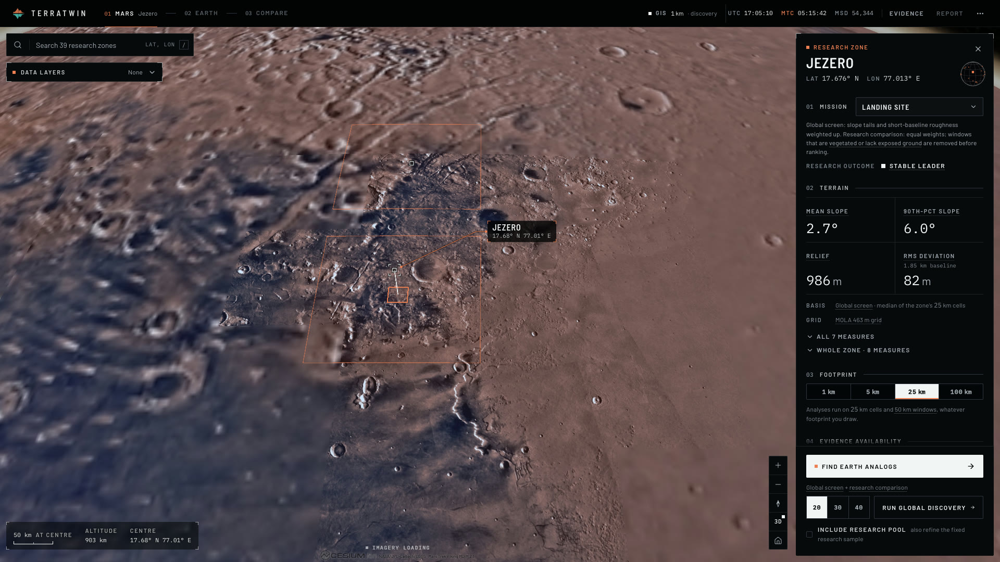
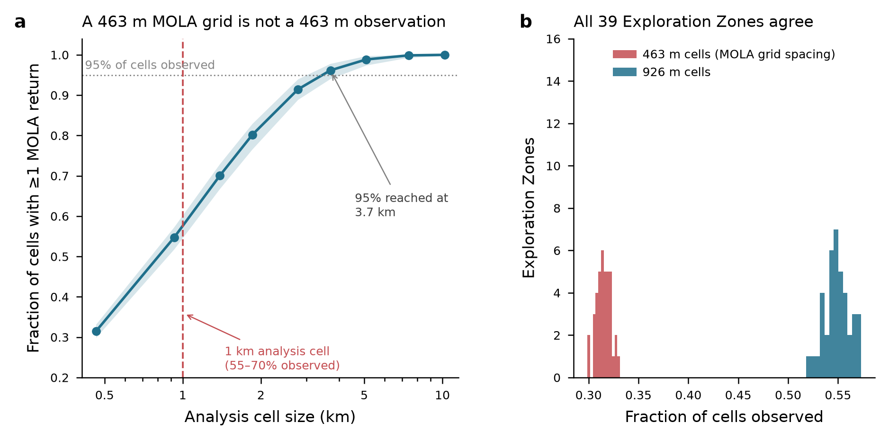
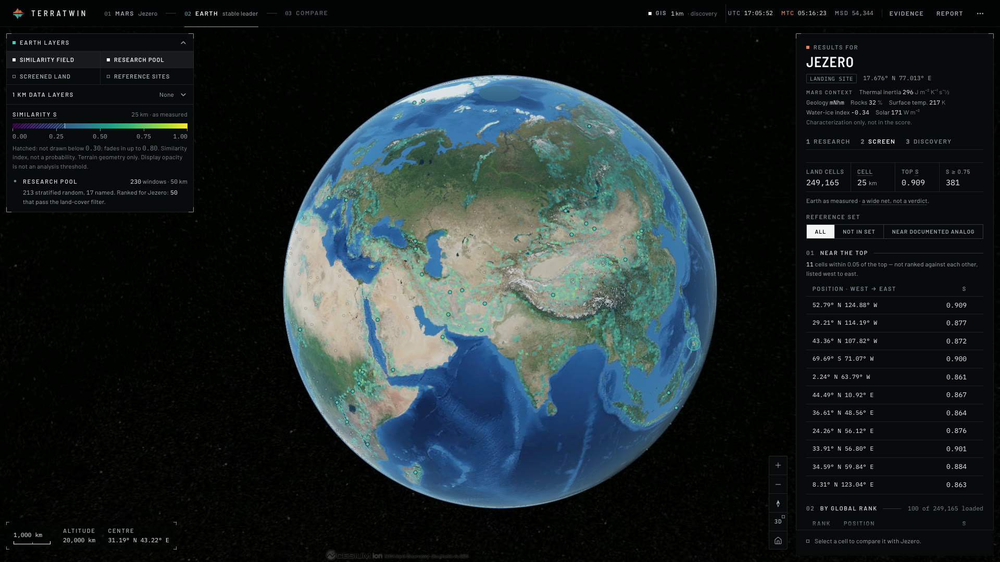
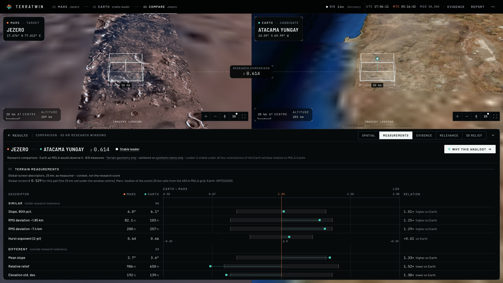
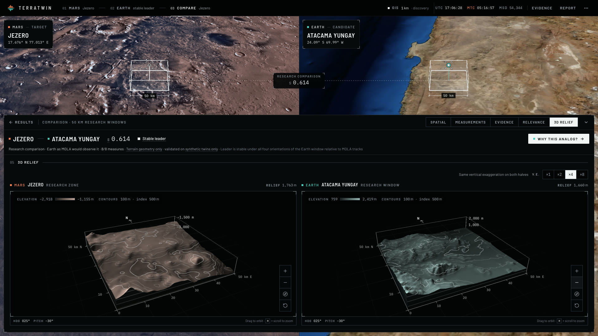
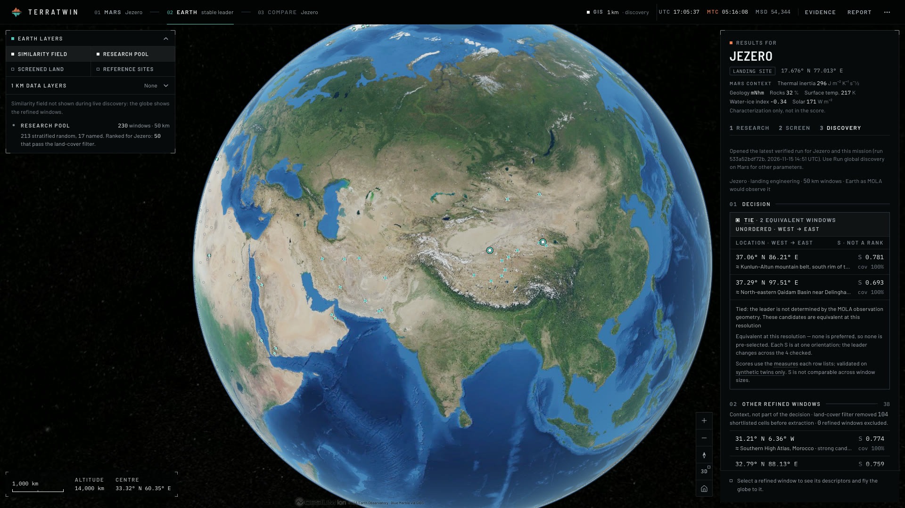
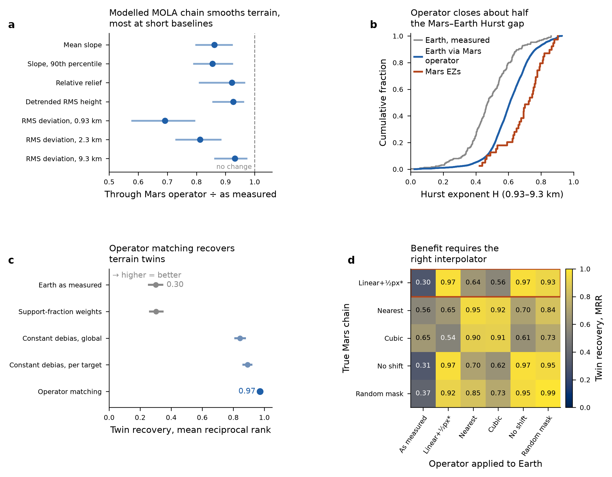
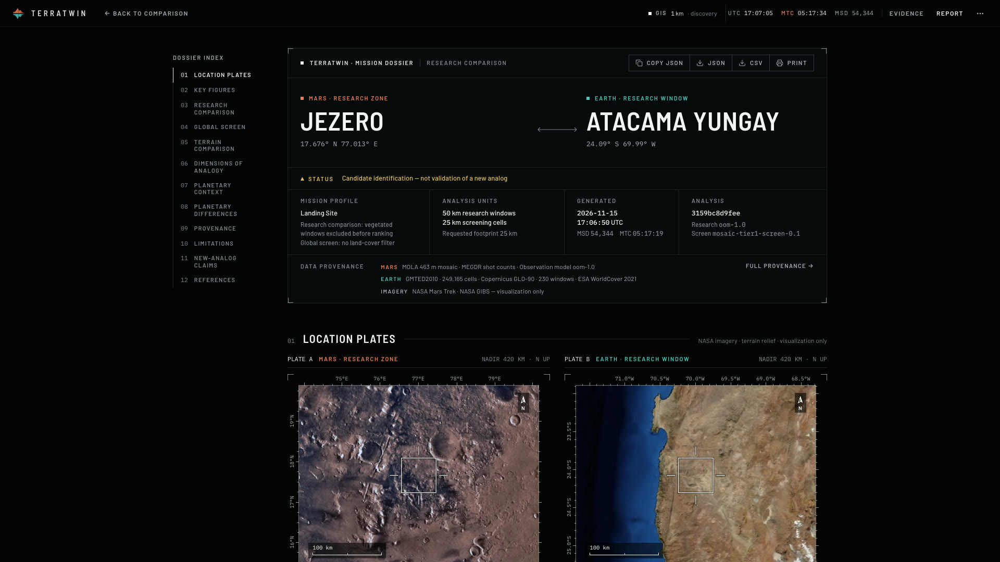

Searching the whole Earth for Jezero crater, TerraTwin returns a tie of two windows in north-west China — the Kunlun–Altun belt on the Tarim Basin's south rim and the north-eastern Qaidam Basin — each scoring above the classic Atacama analog.

249,165 cells of 25 km scored against the Mars target with one shared descriptor function, on local equal-distance grids built with each planet's own radius.
Shortlisted windows at the MOLA grid spacing of 463 m. For field-test missions, vegetated or water-covered ground is removed before ranking.
Measured shot-count mask → interpolation chosen from statistics observable on Mars → measured ½-pixel registration → warp. Then 8 terrain descriptors, log-ratio kernel.
A single leader is named only if it is identical under all four orientations of the Earth window relative to MOLA tracks. Otherwise a tied set, or "no convincing analog". Never a score without coverage.



A tie means the leader is not determined by the MOLA observation geometry: the two windows are equivalent at this resolution and are shown unordered. Place names are approximate, read from the coordinates by the team. The Qaidam Basin is independently proposed as a Mars analog in the literature; TerraTwin itself makes no novelty claim.

| 50 km window descriptor | Mars · Jezero | Earth · 37.06° N 86.21° E, as MOLA would see it |
|---|---|---|
| Mean slope · 90th-percentile slope | 2.82° · 6.11° | 2.67° · 5.30° |
| Relative relief · RMS deviation at 0.93 km | 1,763 m · 49.6 m | 1,711 m · 49.7 m |
| Hurst exponent | 0.678 | 0.663 |
Terrain geometry as MOLA observes it, at stated baselines. Cold, arid, bare ground that a rover or lander would actually see.
The Xinjiang window is permafrost terrain; Jezero shows no shallow-ice signal. Gravity (3.71 vs 9.81 m s⁻²), pressure, atmosphere and radiation differ at any Earth site. Geology and process are not evaluated.

Analog-site selection teams, rover-mobility and landing-hazard algorithm testers, field-campaign planners, students.
Measured terrain record and six planetary-context factors for any Mars point; a global Earth screen; an on-demand discovery run (1–6 min); Compare with 3D relief; an exportable dossier (JSON / CSV / print) with provenance and verbatim limitations.
ESA Copernicus DEM GLO-90 · ESA WorldCover 2021 v200 · USGS SIM 3292 geologic map of Mars
Research package produced in AI-assisted research sessions (Claude Science); app, GIS pipeline and these materials written with Claude Code, directed and verified by the team. No measurement was generated by AI; no trained model anywhere.
